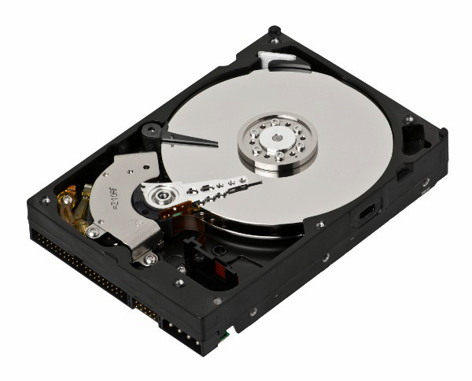

이제 사람들이 IT에 많은 관심이 생겨서
1TB 짜리 저장장치를 사도 온전히 1TiB가 아님을 알 수 있다.
내가 여기서 TB와 TiB를 사용했는데, 이에 대해 알아보자.
SI 단위
프랑스어로 Système international d’unités
현 과학계에서 사용하는 표준단위.
표준화의 대표적인 성공사례이자 현재의 국제 과학계가 있을 수 있게 해 준 일등공신.
컴퓨터 용량과 관련된 단위들만 살펴보자.
| 단위 | 이름 | 배수(10진법) | 배수(2진법) |
|---|---|---|---|
| Y | yotta | 1024 | ≒280 |
| Z | zetta | 1021 | ≒270 |
| E | exa | 1018 | ≒260 |
| P | peta | 1015 | ≒250 |
| T | tera | 1012 | ≒240 |
| G | giga | 109 | ≒230 |
| M | mega | 106 | ≒220 |
| k | kilo | 103 | ≒210 |
위와 같이 SI 단위의 접두어는 과학계에서 사용하는 표준 단위이다.
참고로 k는 온도를 나타내는 K와 헷갈린다고 소문자로 표기하였다.
저장장치 제조 회사는 이를 저장장치의 용량을 표기하는데 사용했다.
저장장치 제조 회사가 말하는 1kB = 103Byte = 1000Byte
하지만 전기회로는 전압이 불안정해서 컴퓨터에서도 전압을 두 가지로만 나누었다.
이게 컴퓨터가 0과 1로만 이루어진 까닭이다.
이러한 탓에 컴퓨터는 1kB = 210Byte = 1024Byte로 인식한다.
우리가 생각하는 1024Byte에서 24Byte의 오차가 생긴다.1000Byte ≒ 1024Byte
1kB니까 24Byte의 차이 밖에 안 나는데, 1TB라면…?
240 - 1012 = 99511627776(Byte) = 92.6774253845214844(GB)의 오차가 난다.
물론 저장 장치에 따라 달라지기도 한다.
내가 보기엔 이거 분명 상술이다.
애초에 십진 표기법을 사용하는 SI 단위를 이진 표기법을 사용하는 컴퓨터에 사용하는 것 자체가 맞지 않았다.
이진 표기법의 표준이 정해지기 전에 컴퓨터가 나와서 어쩔 수 없었을지도 모르기도 하지만…
IEC 표준 접두어(IEC 60027-2)
국제 전기 기술위원회(International Electrotechnical Commission, IEC)에서 정의한 이진 표준 접두어이다.
| 단위 | 이름 | 배수(10진법) | 배수(2진법) |
|---|---|---|---|
| Yi | yobi | 280 | ≒1024 |
| Zi | zebi | 270 | ≒1021 |
| Ei | exbi | 260 | ≒1018 |
| Pi | pebi | 250 | ≒1015 |
| Ti | tebi | 240 | ≒1012 |
| Gi | gibi | 230 | ≒109 |
| Mi | mebi | 220 | ≒106 |
| Ki | kibi | 210 | ≒103 |
1KiB = 210Byte = 1024Byte로 우리가 생각하는 단위가 맞다.
그나마 다행인 것은 하드 디스크나 플래시 메모리(USB, SD 카드, SSD 등등)과는 달리
RAM이나 CD(거의 쓰지 않게 됐지만…)는 SI 단위를 쓰면서 IEC 표준 접두어와 같은 결과를 낸다고 한다.
쉽게 말해 RAM이나 CD는 상술을 쓰지 않는다는 뜻이다.
아마 RAM의 경우에는 메모리 주소와 관련이 있지도 않을까… 싶다.
하지만 이름이 뭔가 이상하고 어색해서 많이들 쓰지 않는다.
이러면 이럴 수록 그들의 상술에 놀아나기 때문에 조금이라도 써야겠다.
또한 이러한 상술은 인터넷 업체에서도 쓰고 있다.
아래 링크를 참조하자.
(상식) 인터넷 속도에 대한 진실